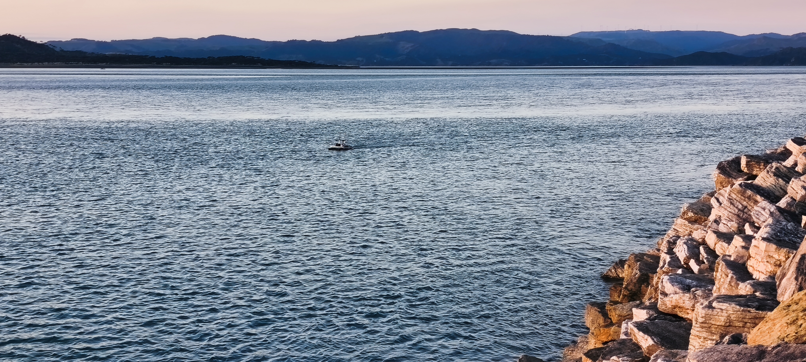
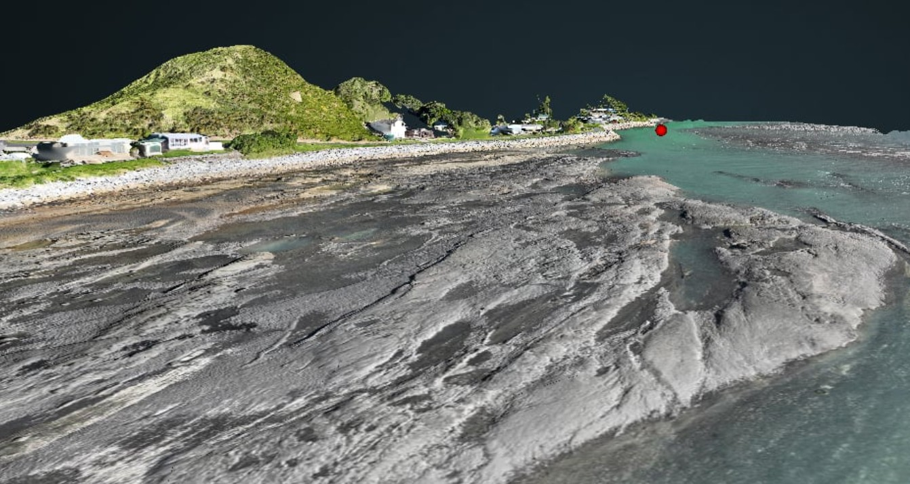
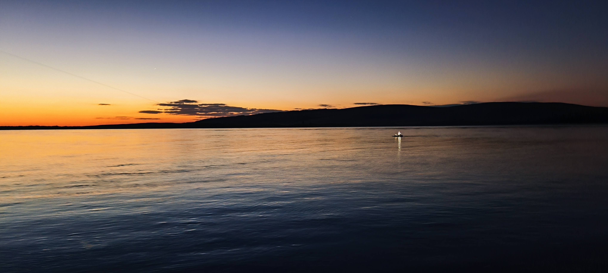
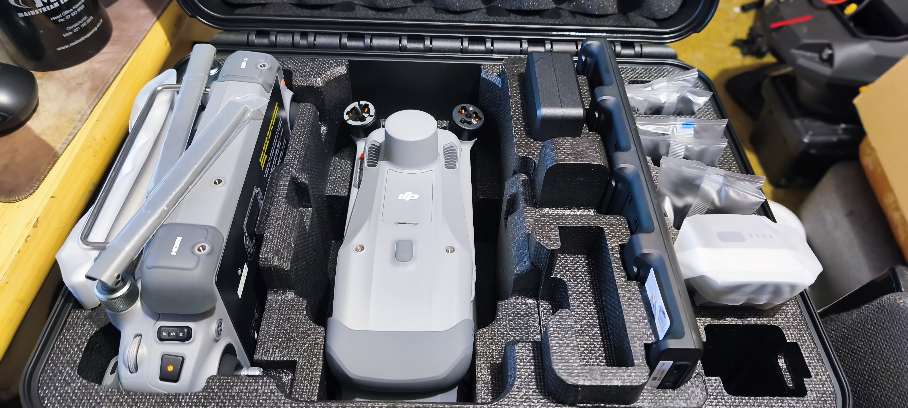

Updated: Nov 5, 2025
Earlier this year, MĀKI completed a topo-bathymetry survey at Aotea Harbour for the Ōtorohanga District Council. The objective was to assess the condition of the harbour's stone wall structure and capture detailed information on the channel's shape and depth profile.
To achieve this, our team used a combination of surface and aerial mapping technologies. The MĀKI autonomous vessel conducted a high-resolution bathymetric survey using RTK-enabled positioning for centimetre-level accuracy. At the same time, a DJI drone was deployed to capture photogrammetry imagery of the surrounding terrain and wall structures.
The resulting bathymetric and topographic point clouds were integrated into a unified dataset, providing a complete 3D representation of both the underwater channel and the above-water features. This combined model allowed engineers to visualise the full system, assess erosion patterns, and identify areas of concern with precision.




By merging RTK bathymetry and drone photogrammetry, MĀKI delivered a comprehensive, high-accuracy dataset that supports informed decision-making and long-term asset management for the council's coastal infrastructure.
At MĀKI, we specialise in integrating autonomous marine and aerial systems to produce seamless, data-driven insights for engineers and environmental professionals across New Zealand.